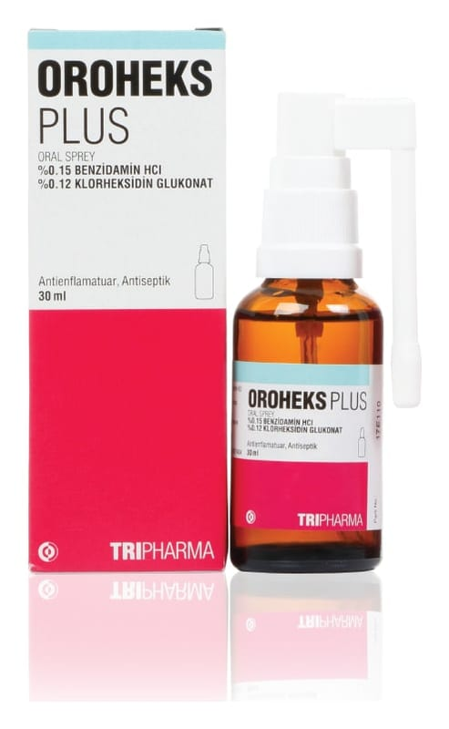

Oroheks Plus % 0.15/% 0.12 Oral Sprey, Çözelti 30 ml

Ne için kullanılır
KT · Bölüm 1• OROHEKS PLUS nane aromalı, renksiz, berrak sıvı şeklinde spreydir. • Özel püskürtme apareyli, HDPE kapaklı, 30 ml’lik kahverengi cam şişede kullanıma sunulmuştur. • OROHEKS PLUS, antimikrobiyal (mikropları öldüren veya çoğalmasını durduran) etkiye sahip bir ilaçtır. • Ağız ve boğazda iltihap oluşturan mikrobik hastalıkların önlenmesinde, hastanın yutma fonksiyonunun rahatlatılması ve diş eti rahatsızlıklarında belirtilerin giderilmesinde ve diş hekimliğinde yapılacak işlemlerden önce önleyici olarak kullanılır.